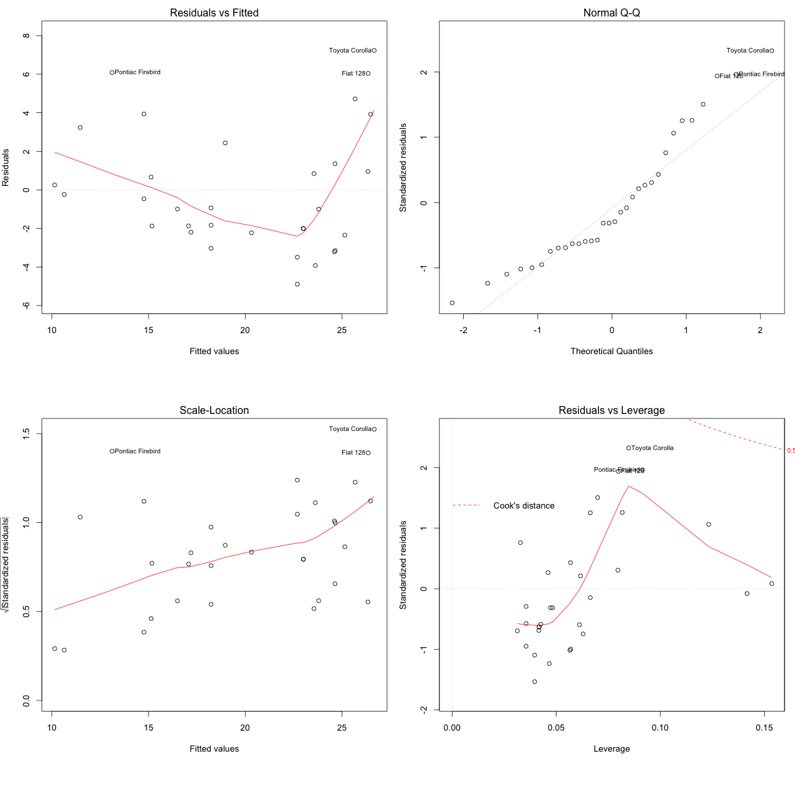
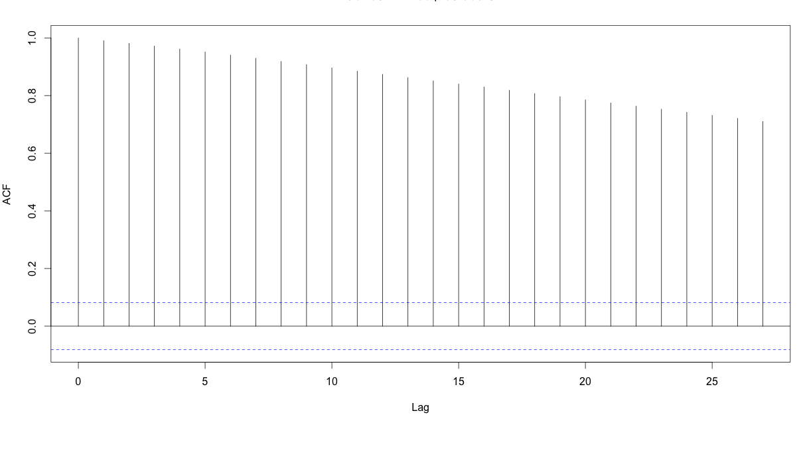
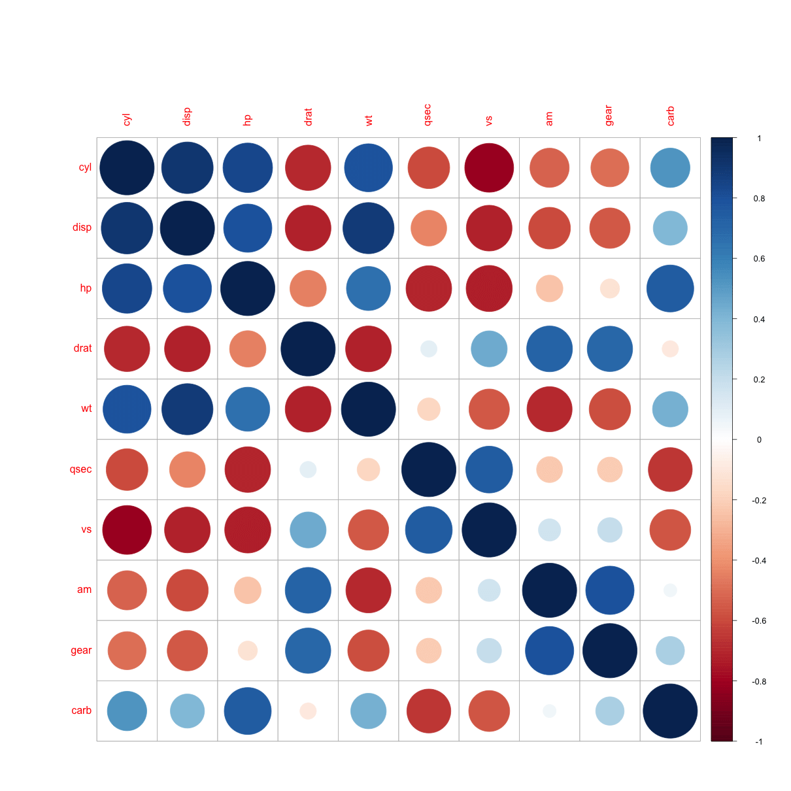
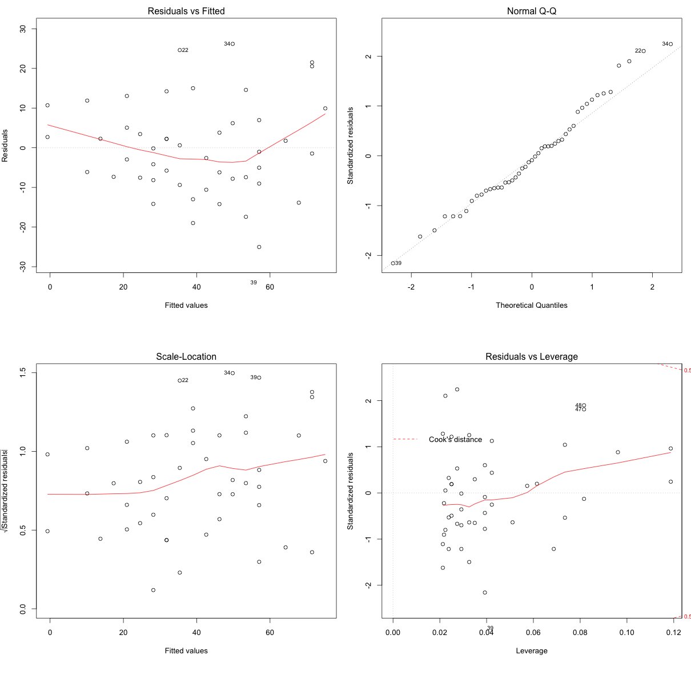
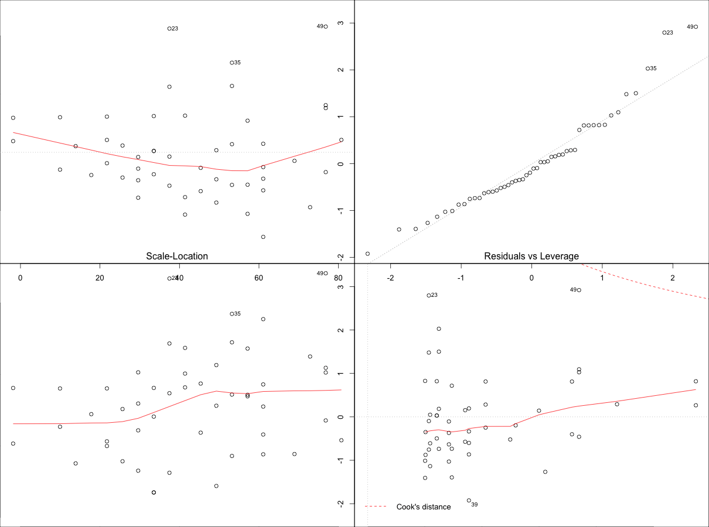
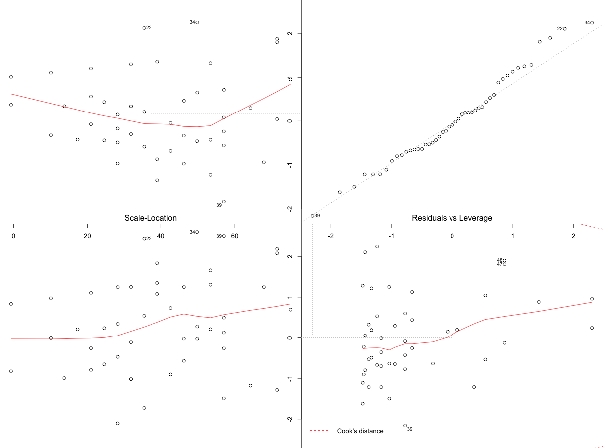

Building a linear regression model is only half of the work. In order to actually be usable in practice, the model should conform to the assumptions of linear regression.
Assumption 1
The regression model is linear in parameters
An example of model equation that is linear in parameters
Y = a + (β1 * X1) + (β2 * X22)
Though, the X2 is raised to power 2, the equation is still linear in beta parameters. So the assumption is satisfied in this case.
An example of linear in variables but non-linear in parameters. This will violate the assumption.
Y = a + (β1 * X1) + (β22 * X2)
Here, the beta parameter is raised to power 2, which is not linear. So the assumption is violated by this equation.
Assumption 2
The mean of errors is zero
How to check?
Check the mean of the residuals. If it approximately zero, then this assumption is held true for that model.
mod <- lm(dist ~ speed, data=cars)
mean(mod$residuals)
#=> 2.442491e-17Since the mean of residuals is approximately zero, this assumption holds true for this model.
Assumption 3
Homoscedasticity of errors or equal variance
How to check?
Once the regression model is built, set par(mfrow=c(2, 2)), then, plot the model using plot(lm.mod). This produces four plots. The top-left and bottom-left plots shows how the errors vary as the fitted values increase.
par(mfrow=c(2,2)) # set 2 rows and 2 column plot layout
mod_1 <- lm(mpg ~ disp, data=mtcars) # linear model
plot(mod_1)
From the first plot (topleft), as the fitted values along x increase, the residuals decrease and then increase. This pattern is indicated by the red line, which should be approximately flat if the errors are homoscedastic. The plot on the bottom left also checks this, and is more convenient as the error term in Y axis is standardised.
In this case, there is a definite pattern noticed. So, there is heterscedasticity. Lets check this on a different model.
mod <- lm(dist ~ speed, data=cars[1:20, ]) # linear model
plot(mod)
Now, the points appear random and the line looks pretty flat, with no increasing or decreasing trend. So, the condition of homoscedasticity can be accepted.
Assumption 4
No autocorrelation of errors
This is applicable especially for time series data. Autocorrelation is the correlation of a time Series with lags of itself. When the error is autocorrelated, it means that the current value is dependent of the previous (historic) values and that there is a definite unexplained pattern in the Y variable that shows up in the error term.
How to check for autocorrelation?
Below, are 3 ways you could check for autocorrelation of errors.
Using acf plot
# Method 1: Visualise with acf plot
library(ggplot2)
data(economics)
lmMod <- lm(pce ~ pop, data=economics)
acf(lmMod$residuals) # highly autocorrelated from the picture.
The X axis correponds to the lags of the residual, increasing in steps of 1. The very first line (to the left) shows the correlation of residual with itself (Lag0), therefore, it will always be equal to 1.
If the errors were not autocorrelated, the correlation (Y-axis) from the immediate next line onwards will drop to a near zero value below the dashed blue line (significance level). Clearly, this is not the case here. So we can conclude that the residuals are autocorrelated.
Using runs test
# Method 2: Runs test to test for randomness
lawstat::runs.test(lmMod$residuals)
#=> Runs Test - Two sided
#=> data: lmMod$residuals
#=> Standardized Runs Statistic = -23.812, p-value < 2.2e-16With a p-value < 2.2e-16, we reject the null hypothesis that it is random. This means there is a definite pattern in the residuals.
Using Durbin-Watson test.
# Method 3: Durbin-Watson test
lmtest::dwtest(lmMod)
#=> Durbin-Watson test
#=> data: lmMod
#=> DW = 0.0021559, p-value < 2.2e-16
#=> alternative hypothesis: true autocorrelation is greater than 0So, dwtest also confirms our finding.
How to rectify?
Add lag1 of residual as an X variable to the original model. This can be conveniently done using the slide function in DataCombine package.
library(DataCombine)
econ_data <- data.frame(economics, resid_mod1=lmMod$residuals)
econ_data_1 <- slide(econ_data, Var="resid_mod1", NewVar = "lag1", slideBy = -1)
econ_data_2 <- na.omit(econ_data_1)
lmMod2 <- lm(pce ~ pop + lag1, data=econ_data_2)Lets check if the problem of autocorrelation of error is taken care of using this method.
Check 1
acf(lmMod2$residuals)
Unlike the acf plot of lmMod, the correlation values drop below the dashed blue line from lag1 itself. So autocorrelation can’t be confirmed.
Check 2
runs.test(lmMod2$residuals) # runs test
#=> Runs Test - Two sided
#=>
#=> data: lmMod2$residuals
#=> Standardized Runs Statistic = 0.96176, p-value = 0.3362p-value = 0.3362. Can’t reject null hyp that it is random. With a p-value = 0.3362, we cannot reject the null hypothesis. Therefore we can safely assume that residuals are not autocorrelated.
Check 3
lmtest::dwtest(lmMod2)
#=> Durbin-Watson test
#=>
#=> data: lmMod2
#=> DW = 2.0431, p-value = 0.6672
#=> alternative hypothesis: true autocorrelation is greater than 0With a high p value of 0.667, we cannot reject the null hypothesis that true autocorrelation is zero. So the assumption that errors should not be autocorrelated is satisfied by this model.
If, even after adding lag1 as an X variable, does not satidfy the assumption of autocorrelation of errors, you might want to try adding lag2, or be creative in making meaningful derived explanatory variables or interaction terms. This is more like art than an algorithm.
Assumption 5
The X variables and Errors are uncorrelated
How to check?
Do a correlation test on the X variable and the residuals.
mod.lm <- lm(dist ~ speed, data=cars)
cor.test(cars$speed, mod.lm$residuals) # do correlation test
#=> Pearson's product-moment correlation
#=>
#=> data: cars$speed and mod.lm$residuals
#=> t = -8.1225e-17, df = 48, p-value = 1
#=> alternative hypothesis: true correlation is not equal to 0
#=> 95 percent confidence interval:
#=> -0.2783477 0.2783477
#=> sample estimates:
#=> cor
#=> -1.172376e-17p-value is high, so null hypothesis that true correlation is 0 can’t be rejected. So, the assumption holds true for this model.
Assumption 6
The number of observations must be greater than number of Xs
This can be directly observed by looking at the data.
Assumption 7
The variablility in X values is positive
This means the X values in a given sample must not all be the same (or even nearly the same).
How to check?
var(cars$speed)
#=> [1] 27.95918The variance in the X variable above is much larger than 0. So, this assumption is satisfied.
Assumption 8
The regression model is correctly specified
This means that if the Y and X variable has an inverse relationship, the model equation should be specified appropriately:
$$Y = \beta1 + \beta2 * \left( 1 \over X \right)$$
Assumption 9
No perfect multicollinearity
There is no perfect linear relationship between explanatory variables.
How to check?
Using Variance Inflation factor (VIF). But, What is VIF?
VIF is a metric computed for every X variable that goes into a linear model. If the VIF of a variable is high, it means the information in that variable is already explained by other X variables present in the given model, which means, more redundant is that variable. So, lower the VIF (<2) the better. VIF for a X var is calculated as:
$$VIF = {1 \over \left( 1-R_{sq} \right)}$$
where, Rsq is the Rsq term for the model with given X as response against all other Xs that went into the model as predictors.
Practically, if two of the X′s have high correlation, they will likely have high VIFs. Generally, VIF for an X variable should be less than 4 in order to be accepted as not causing multi-collinearity. The cutoff is kept as low as 2, if you want to be strict about your X variables.
library(car)
mod2 <- lm(mpg ~ ., data=mtcars)
vif(mod2)
# cyl disp hp drat wt qsec vs am gear carb
# 15.373833 21.620241 9.832037 3.374620 15.164887 7.527958 4.965873 4.648487 5.357452 7.908747 How to rectify?
Two ways:
- Either iteratively remove the X var with the highest VIF or,
- See correlation between all variables and keep only one of all highly correlated pairs.
library(corrplot)
corrplot(cor(mtcars[, -1]))
#=> Interpreted from below plot.
#=> Correlated pairs:
#=> - disp, cyl, hp, wt
#=> - gear, am
#=> - hp, carb
mod <- lm(mpg ~ cyl + gear, data=mtcars)
vif(mod)
#=> cyl gear
#=> 1.320551 1.320551The convention is, the VIF should not go more than 4 for any of the X variables. That means we are not letting the RSq of any of the Xs (the model that was built with that X as a response variable and the remaining Xs are predictors) to go more than 75%. => 1/(1-0.75) => 1/0.25 => 4.
Assumption 10
Normality of Errors
The residuals should be normally distributed. This also implies the Y and the Xs are also normally distributed. It is an essential assumption if the maximum likelihood method is used to commute the estimates.
This can be visually checked using the qqnorm() plot (top right plot).
par(mfrow=c(2,2))
mod <- lm(dist ~ speed, data=cars)
plot(mod)
The qqnorm() plot in top-right evaluates this assumption. If points lie exactly on the line, it is perfectly normal distribution. However, some deviation is to be expected, particularly near the ends (note the upper right), but the deviations should be small, even lesser that they are here.
Check Assumptions Automatically
The gvlma() function from gvlma offers a way to check the important assumptions on a given linear model.
par(mfrow=c(2,2)) # draw 4 plots in same window
mod <- lm(dist ~ speed, data=cars)
gvlma::gvlma(mod)
#=> Value p-value Decision
#=> Global Stat 15.801 0.003298 Assumptions NOT satisfied!
#=> Skewness 6.528 0.010621 Assumptions NOT satisfied!
#=> Kurtosis 1.661 0.197449 Assumptions acceptable.
#=> Link Function 2.329 0.126998 Assumptions acceptable.
#=> Heteroscedasticity 5.283 0.021530 Assumptions NOT satisfied!
plot(mod)Three of the assumptions are not satisfied. This is probably because we have only 50 data points in the data and having even 2 or 3 outliers can impact the quality of the model. So the immediate approach to address this is to remove those outliers and re-build the model. Take a look at the diagnostic plot below to arrive at your own conclusion.

From the above plot the data points: 23, 35 and 49 are marked as outliers. Lets remove them from the data and re-build the model.
mod <- lm(dist ~ speed, data=cars[-c(23, 35, 49), ])
gvlma::gvlma(mod)
#=> Value p-value Decision
#=> Global Stat 7.5910 0.10776 Assumptions acceptable.
#=> Skewness 0.8129 0.36725 Assumptions acceptable.
#=> Kurtosis 0.2210 0.63831 Assumptions acceptable.
#=> Link Function 3.2239 0.07257 Assumptions acceptable.
#=> Heteroscedasticity 3.3332 0.06789 Assumptions acceptable.
#=> plot(mod)
Though the changes look minor, it is more closer to conforming with the assumptions. There is one more thing left to be explained. That is, the plot in the bottom right. It is the plot of standardised residuals against the leverage. Leverage is a measure of how much each datapoint influences the regression. The plot also contours values of Cook’s distance, which reflects how much the fitted values would change if a point was deleted.
A point far from the centroid with a large residual can severely distort the regression. For a good regression model, the red smoothed line should stay close to the mid-line and no point should have a large cook’s distance (i.e. should not have too much influence on the model.)
influence.measures(mod)
#=> dfb.1_ dfb.sped dffit cov.r cook.d hat inf
#=> 0.087848 -0.08003 0.08834 1.184 3.99e-03 0.1187 *
#=> 0.351238 -0.32000 0.35320 1.138 6.25e-02 0.1187 *
#=> -0.145914 0.12652 -0.15010 1.114 1.14e-02 0.0735
#=> 0.285653 -0.24768 0.29384 1.075 4.31e-02 0.0735
#=> 0.047920 -0.04053 0.05012 1.113 1.28e-03 0.0615
#=> -0.136783 0.11208 -0.14670 1.083 1.09e-02 0.0511
#=> .
#=> .
#=> .
#=> 0.200260 -0.27525 -0.33127 1.051 5.43e-02 0.0687
#=> 0.024652 -0.03277 -0.03811 1.138 7.42e-04 0.0816 *
#=> -0.358515 0.47655 0.55420 0.979 1.46e-01 0.0816
#=> -0.377456 0.50173 0.58348 0.964 1.60e-01 0.0816
#=> -0.195430 0.25314 0.28687 1.118 4.14e-02 0.0961